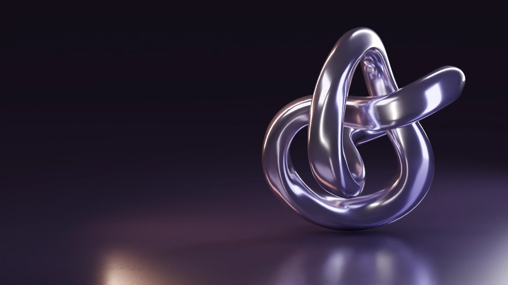
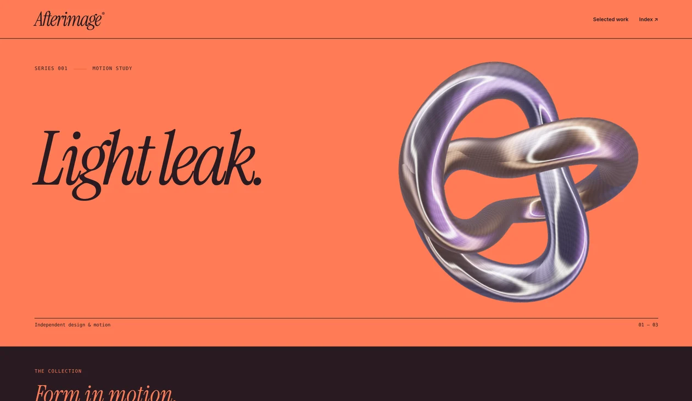
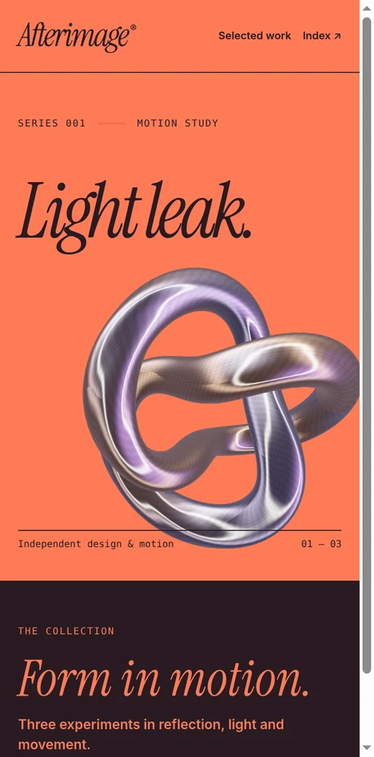
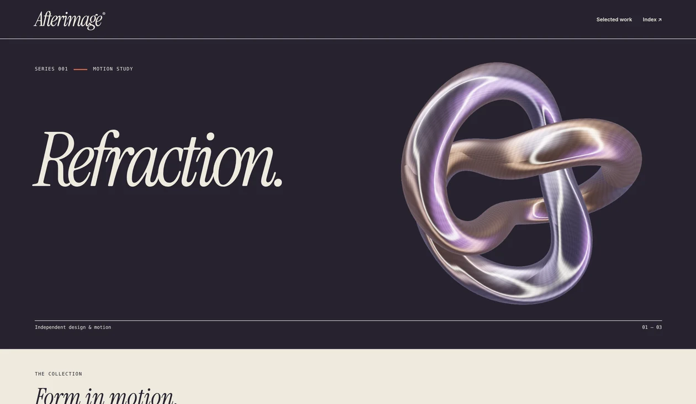
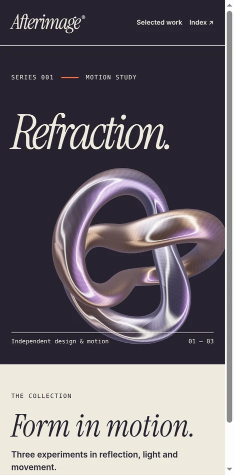
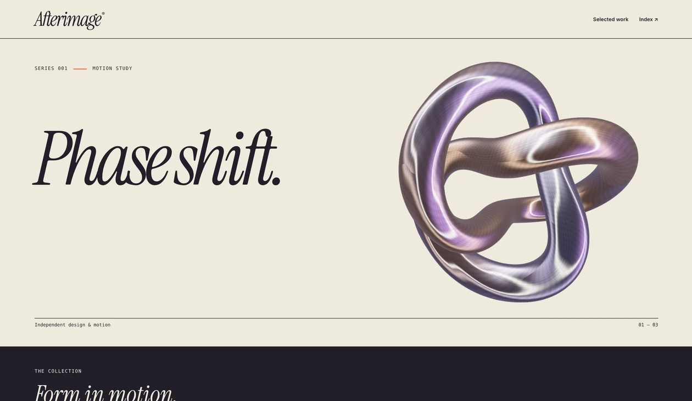
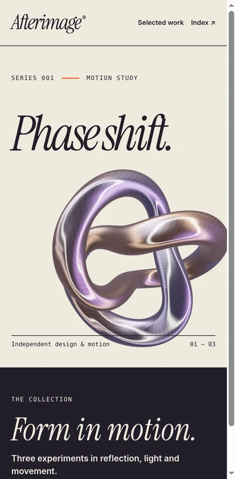

Local-first desktop editor
Multiverse Studio
Cut video, write code, and design websites in one project on your machine.

Workspaces
Inside the studio.
Follow Afterimage from a timeline edit to a line of CSS and a finished page.


Versions
One page, three directions.
The same sculpture runs through three takes on Afterimage. In the studio you can edit each independently and combine the parts you want to keep.











Trailer
The motion cut.
00:30 / 1080p
Get the source
Run it locally.
Unzip the source and open a terminal in the project folder. You’ll need Node.js 22.12 or later and npm. For video, add FFmpeg and ffprobe to your PATH.
Project terminal
npm ci
npm run dev